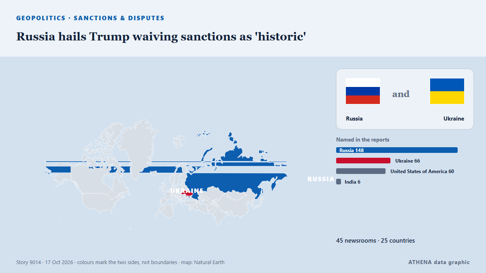

North America
North America: the latest events country by country, ranked by ATHENA with risk, sources and countries.

GeopoliticsRussia hails Trump waiving sanctions as 'historic'
Trump’s executive order comes as he has been warming towards Russia. from The Straits Times
Evacuations begin in Ukraine under localized ceasefire brokered by Melania Trump
Residents of the Russian-occupied Ukrainian town have reported a worsening food crisis since 2022. from Express Tribune
Trump administration illegally fired James Comey's daughter, judge rules
Maurene Comey believes she was let go from her job as a federal prosecutor because her father is the former FBI director. from BBC News
Israeli army kills 2 Palestinians in occupied West Bank shooting
West Bank: Palestinian youth injured, settlers attack cars, steal olive harvest A Palestinian youth suffered injury to the head due to a live-fire shrapnel during a raid by the Israeli military in… from Middle East Eye
US To Grant Flavio Bolsonaro Visas After Brazil Election Loss
Brother Eduardo welcomes him in Miami, Brazilian media reports, as US confirms visas for Bolsonaro and his family. from Anadolu Agency (English)
Iran has no plans for direct meetings with US officials — foreign minister
The American side’s attempt to open the door to dialogue and understanding more broadly is a positive step, Abbas Araghchi said. from TASS (English)
Two men charged in UK with helping Iran over RAF Fairford incident
British prosecutors said on Tuesday they had charged two men under the National Security Act over an incident last month at the RAF Fairford airbase, with police saying the two were suspected of… from Cyprus Mail